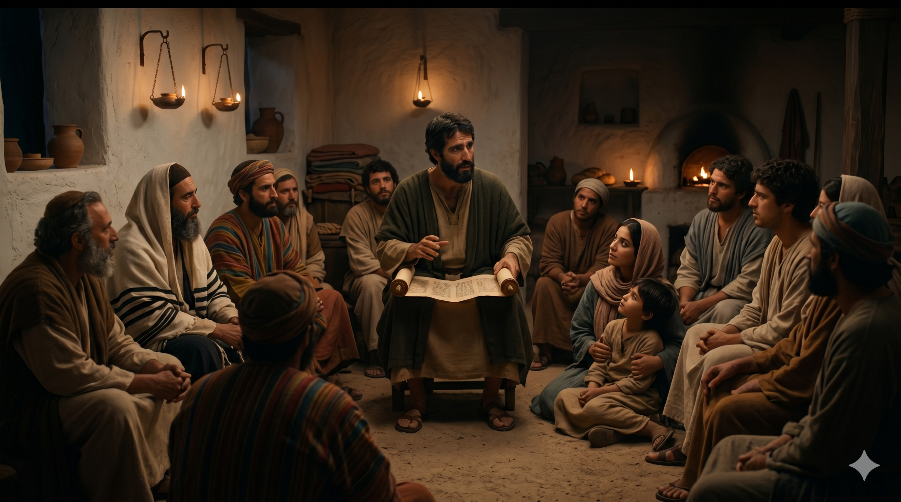

안디옥의 열린 광장, 바나바와 바울이 서로 다른 배경의 무리들 한가운데 서서 함께 가르치는 장면 — 유대인과 이방인이 어깨를 맞대고 앉아 듣고 있다.
바나바가 사울을 찾으러 다소에 가서 만나매 안디옥에 데리고 와서 둘이 교회에 일 년간 모여 큰 무리를 가르쳤고 제자들이 안디옥에서 비로소 그리스도인이라 일컬음을 받게 되었더라. — 사도행전 11:25-26
바나바는 바울을 포기하지 않았습니다. 다메섹 도상의 회심 이후 예루살렘 교회가 바울을 두려워하고 멀리할 때, 바나바가 그를 붙잡아 사도들에게 소개하였습니다. 그로부터 몇 해가 지난 뒤, 안디옥 교회가 뜻밖의 부흥을 경험하게 되자 예루살렘 교회는 바나바를 현장으로 파송합니다. 바나바는 놀라운 선택을 합니다 — 홀로 그 부흥을 이끌 수도 있었지만, 그는 다소로 가서 오랫동안 조용히 머물고 있던 사울을 찾아와 함께 안디옥으로 데려옵니다. 두 사람은 그렇게 일 년을 함께 가르쳤고, 이 가르침의 열매가 역사상 가장 중요한 이름 하나를 탄생시켰습니다 — "그리스도인(Christian)".
안디옥은 당시 로마 제국에서 로마, 알렉산드리아에 이어 세 번째로 큰 도시였습니다. 다양한 민족과 문화가 뒤섞인 국제 도시에서, 유대인과 이방인이 함께 모여 한 분을 예배하는 공동체의 모습은 주변 사람들의 눈에 독특하게 보였을 것입니다. 그들은 그 무리를 가리켜 "그리스도에 속한 사람들", 즉 "그리스도인"이라고 불렀습니다. 이것은 처음에는 외부에서 붙인 이름이었지만, 시간이 흐르면서 이 공동체 자신의 정체성을 담은 이름이 되었습니다. 바울의 일 년, 단 일 년의 헌신된 가르침이 그 이름의 토양이 되었습니다.

안디옥의 한 가정 교회 저녁, 등잔 아래 바울이 두루마리를 펼치고 유대인과 이방인 제자들에게 함께 말씀을 가르치는 친밀한 장면.
바나바가 다소까지 찾아가 바울을 데려온 것처럼, 때로는 누군가를 먼저 찾아가 "함께하자"고 말하는 한 사람이 역사를 바꿉니다. 우리 주변에도 혼자 묵묵히 앉아 있는 사람, 자신의 은사를 쓸 자리를 찾지 못하는 사람이 있을 수 있습니다. 그 사람을 향해 먼저 손을 내밀고 "내 곁에 와서 함께하자"고 말하는 것이, 바나바가 바울에게 했던 일입니다. 그리고 그 작은 한 걸음이 역사상 가장 위대한 사역자 중 한 사람을 세상에 내보내는 계기가 되었습니다.
“그리스도인”이라는 이름은 외부의 시선에서 자연스럽게 붙여진 이름이었습니다. 그것은 그들이 스스로 주장한 것이 아니라, 그들의 삶과 공동체가 너무나 분명하게 그리스도를 닮아 있어서 세상이 알아보게 된 결과였습니다. 오늘 내 삶이 충분히 "그리스도에 속한 사람"의 모습을 드러내고 있는지 돌아보십시오. 말보다 삶이, 선언보다 공동체의 모습이, 세상에게 그리스도를 소개합니다.
“그리스도인”은 스스로 붙인 이름이 아니었습니다.
세상이 보고 알아보게 된 이름이었습니다.
오늘 당신의 삶은 세상이 그리스도를 알아볼 만큼 닮아 있습니까?